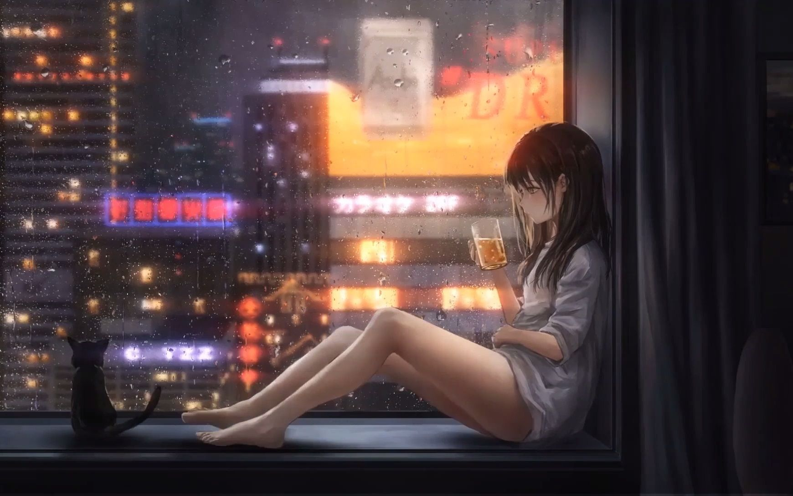
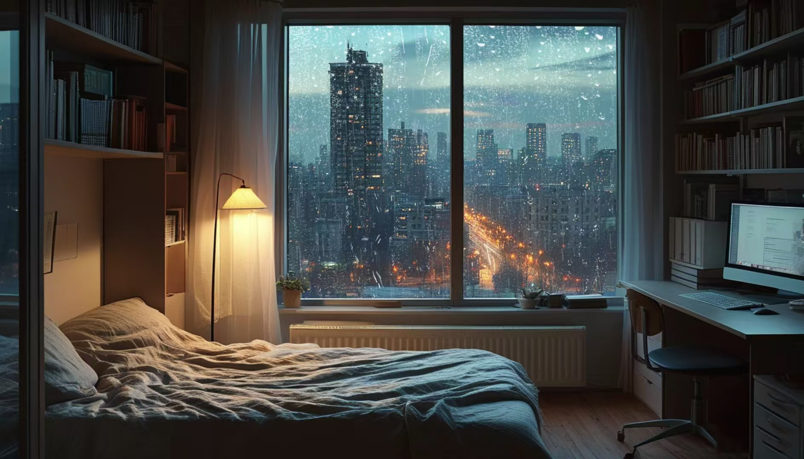
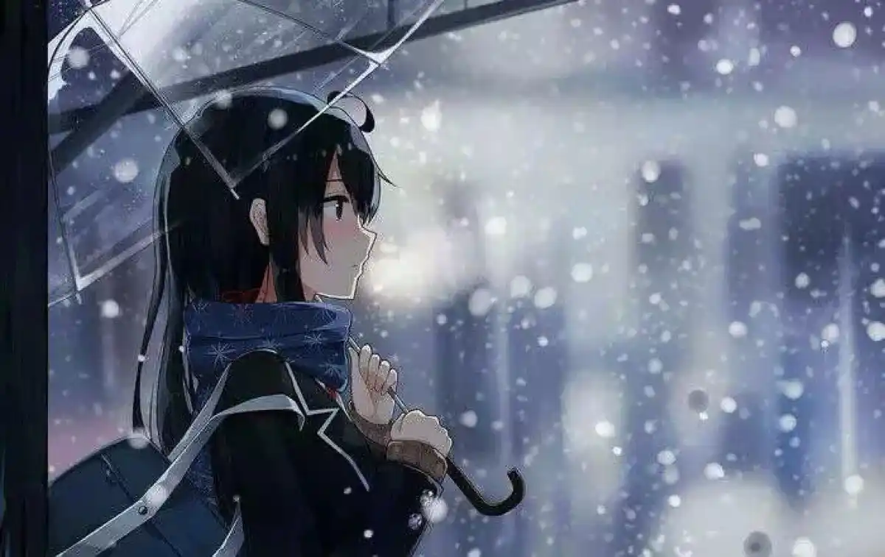
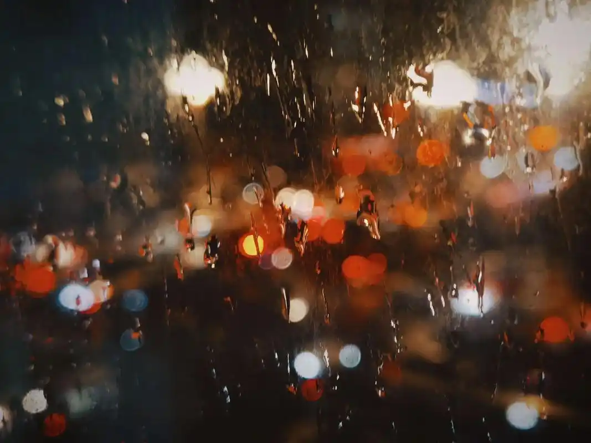

下雨的时候跑出去！让指尖连同衣袖一起浸透！
在冷雨里瑟瑟发抖，让鼻尖和脸颊泛红。
让心跳和雨声融为一体，然后激动又小心地跑进小卖部，去吃一盒甜到发腻的巧克力蛋糕。

雨天的室内是慵懒的，好像氤氲着清新又微醺的酒香。

夜晚，秋天，冷冽的闪烁的雨滴，缱绻的鹅黄色的路灯。
雨落在伞上窸窣的响，在风的裹挟下流进我发丝的凉，摇曳的烛火般的，暧昧难以言说的暖。
然而，雨会蒸发在熙熙攘攘的喧嚣，斑驳了石砖悲凉的底色，待回首时，原来空无一人。

湿润泥土的气息，淡淡苦涩的草叶的香。
在半开的窗上掩面而泣的水滴，它怀抱着倒悬摇摇欲坠的霓虹世界，读不懂风的脚步以致流尽了光亮。
于是会编织一个梦，柠檬汽水似的阳光洒在浅绿色房间的一隅，希望不再徘徊伤悲。
